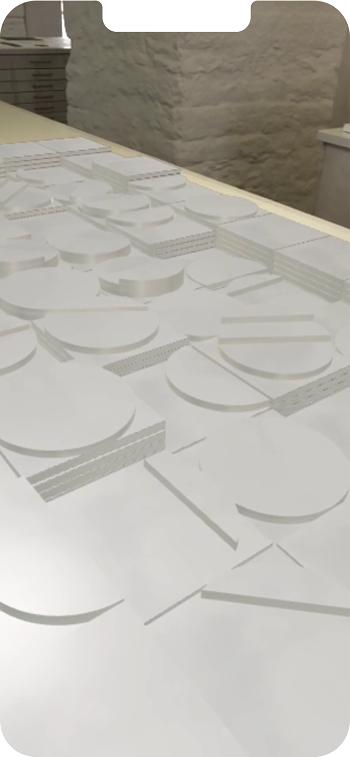

wo stehe ich hier ?
»Der öffentliche Raum als wichtiger Teilbereich einer Stadt ist der Ort, in dem Bürger miteinander agieren und kommunizieren können, den sie mit einer bestimmten persönlichen Bedeutung versehen können.«
Jo Enzweiler
Jo Enzweiler

das spiel
Das Spiel STADT & RAUM fragt danach wie Kunstwerke in den öffentlichen Raum eingreifen und ihn
verändern. Was wäre, wenn hier diese Brunnenplastik stünde? Wie würde sich der Stadtraum durch
sie verändern? Wie verändert sich die Plastik? Wie fügen sich ihre Höhenlinien in die
Straßenfluchten ein? Was bedeutet Proportion? Welche Räume und Freiräume bietet eine Stadt?
Und wie nehmen wir uns darin wahr? Können wir Räume allein durch unsere Vorstellungskraft verändern?
das werk
Für den neu gestalteten Marktplatz des Saarbrücker Stadtteils Malstatt wird 1983 ein künstlerischer
Wettbewerb ausgeschrieben. Obwohl die Jury den Brunnenentwurf von Jo Enzweiler lobt, wird das Projekt
nicht realisiert.
Stell dir einen großen Platz vor, der an drei Seiten durch Häuser begrenzt ist, entlang der vierten Seite
verläuft die stark befahrene Hauptstraße. Auf dieser Fläche breitet sich der Brunnen rechteckig auf
einer Fläche von ca. 16 x 8 m aus. Auf einem Grundraster werden Quadrat- und Kreiselemente wie
Plättchen in unterschiedlichen Höhen aufeinander gestapelt. Es entsteht ein sanftes Relief, das
sich in der Fläche ausdehnt, wie das Profil einer hügeligen Landschaft. Der Entwurf sieht vor,
dass das Wasser im Brunnen stündlich steigt und sich dann wieder stündlich absenkt, Plättchen für
Plättchen, Höhenlinie für Höhenlinie. Enzweiler bezeichnet dieses Wasserspiel als »stille Lösung«,
die der »Bewegtheit auf dem Platz« mit Ruhe begegnet. Du kannst dir vorstellen, wie unterschiedlich
sich das Licht brechen würde und wie, je nach Wasserstand, unterschiedliche Elemente und Formen
hervorragen oder unter Wasser liegen, wie Steine in einer Wasserpfütze, über die man vielleicht
sogar laufen kann. Enzweiler ist es wichtig, dass Du dieses Objekt mit alle Sinne erfahren kannst,
d.h. du kannst es betrachten, erfühlen, begehen und umschreiten. Mit dieser Idee schöpft Enzweiler
aus dem Formenschatz früherer Reliefarbeiten und plastischer Objekte aber auch aus seiner Beobachtungsgabe
für landschaftliche Prozesse und Gegebenheiten. Er würde das so sagen:
»Das Bild zeigt nicht die Landschaft, es ist die Landschaft«.
»Das Bild zeigt nicht die Landschaft, es ist die Landschaft«.
(Bildausschnitt: Platzgestaltung 1983, Wettbewerbsentwurf, Malstatter Markt,
Saarbrücken, Holzmodell, Maßstab 1:10, 80 x 1,60 x 8 cm, Detailansicht, Foto: Jo Enzweiler)
eure bilder
Gefördert durch
Die Entwicklung von »How To: Jo Enzweiler« wurde ermöglicht durch das Stipendienprogramm von
Coding da Vinci im Programm Kultur Digital
der Kulturstiftung des Bundes.